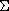
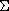

In the study of descriptor systems, it is sometimes
necessary to find (or find out that it does not exist)
an  matrix X satisfying
matrix X satisfying

where E and A are  matrices such that E,A is a regular pencil.
In this problem, which clearly is a  problem,
the LME functions play important role. The evaluation function
can be written as follows
matrices such that E,A is a regular pencil.
In this problem, which clearly is a  problem,
the LME functions play important role. The evaluation function
can be written as follows
function [LME,LMI,OBJ]=dscr_lyap_eval(XLIST) X=XLIST(:) LME=E'*X-X'*E LMI=list(-A'*X-X'*A-eye,E'*X) OBJ=[]and the problem can be solved by (assuming E and A are already defined)
--> XLIST0=list(zeros(A)) --> XLISTF=lmisolver(XLIST0,dscr_lyap_eval) --> X=XLISTF(:)